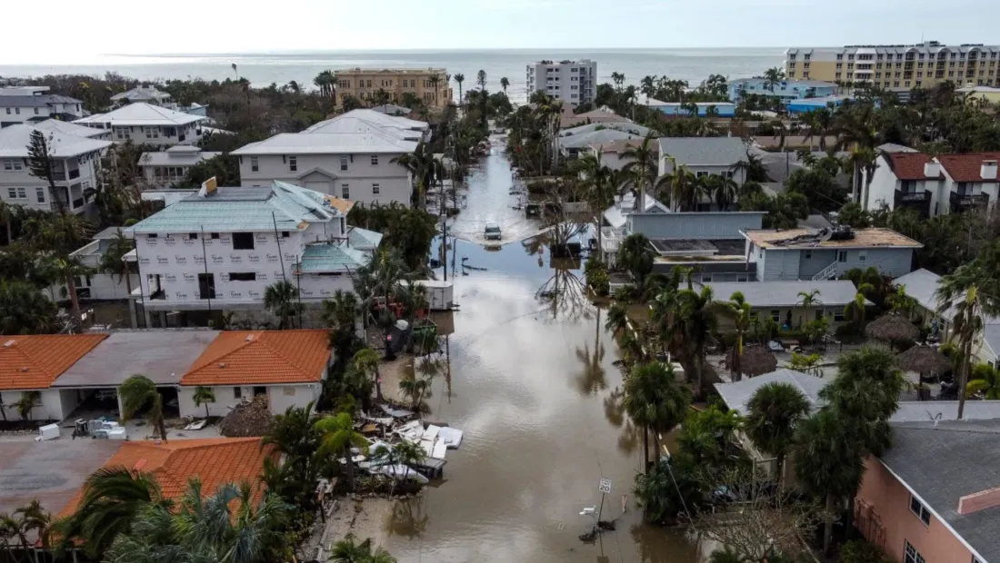

Estados Unidos
Última hora del paso del huracán Milton por Florida:
Floridianos regresan a calles inundadas y hogares desaparecidos después de Milton

Los floridanos se están recuperando después de que Milton tocó tierra por la costa del Golfo como un peligroso huracán de categoría 3 y atravesó el estado como una tormenta de categoría 1 antes de desplazarse hacia la costa del Atlántico.